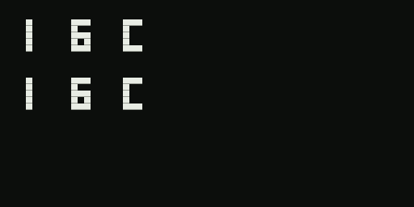
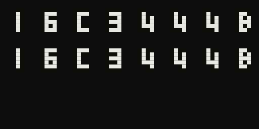

Simple Simon
I.J. Campbell · DREAMER no. 8 (1981-04) p. 18 1K RAM


A memory game: one more hex digit flashes on each round, up to eight, and you must repeat them in order on the keypad. Eight correct gives YOU WIN, a wrong key gives I WIN, and the game restarts when you press a key.
Keys
0-F: repeat the flashed digits.
Files
| File | Version | Load | Run |
|---|---|---|---|
| Simple Simon.c8 | main | 0200-038F | C000 |
Listing as transcribed (with notes): simple_simon.txt
Source
DREAMER no. 8 on archive.org, p. 18 (PDF page 20). Author: I.J. Campbell.
Corrections applied
None.
Open doubts
- Rows 0260-038F are very faint on the scan: 0310-0334 (final message), 0364, 0366, 0370, 0380 and 038E were reconstructed.